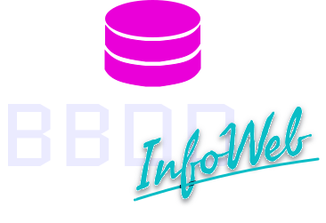

¿Cómo puede una app del clima saber el estado del tiempo en tu ciudad en tiempo real?
¿Qué permite que dos programas se entiendan aunque hablen "idiomas" distintos?
¿Por qué tantas apps diferentes pueden usar Google Maps sin crearlo desde cero?
Cada vez que tu app del clima acierta o ves un mapa integrado en otra app… hay una API detrás. Te explicamos qué son y por qué están en todo lo que usas.
¿Cómo es posible que podamos comunicarnos con personas de todo el mundo en segundos?
¿Qué pasa realmente cuando mandas un mensaje o ves un video por Internet?
¿Por qué Internet sigue funcionando aunque un servidor o una red falle?
¿Alguna vez te preguntaste cómo viaja tu mensaje hasta el otro lado del mundo en segundos? Spoiler: no va en línea recta, pero siempre llega. Descubrí cómo funciona la red que lo hace posible.
¿Es lo mismo Internet que la Web? ¿Por qué muchas personas los confunden?
¿Cómo llega una página web desde un servidor hasta tu pantalla?
¿Qué sucede detrás de escena cuando haces clic en un enlace?
Le das clic a un link y, ¡boom!, aparece una página. Pero… ¿cómo pasa eso realmente? Vamos a desarmar el proceso que hace visible la Web ante tus ojos.
¿Qué asegura que los datos lleguen completos y en orden, aunque vayan por caminos distintos?
¿Cómo sabe tu dispositivo exactamente a qué servidor conectarse al visitar una página?
¿Qué significa el «http://» que aparece antes de algunas páginas web?
Aunque no los veas, HTTP y TCP/IP están en cada clic, mensaje o video que cargas. Son el idioma secreto de Internet, y acá te contamos cómo funcionan.